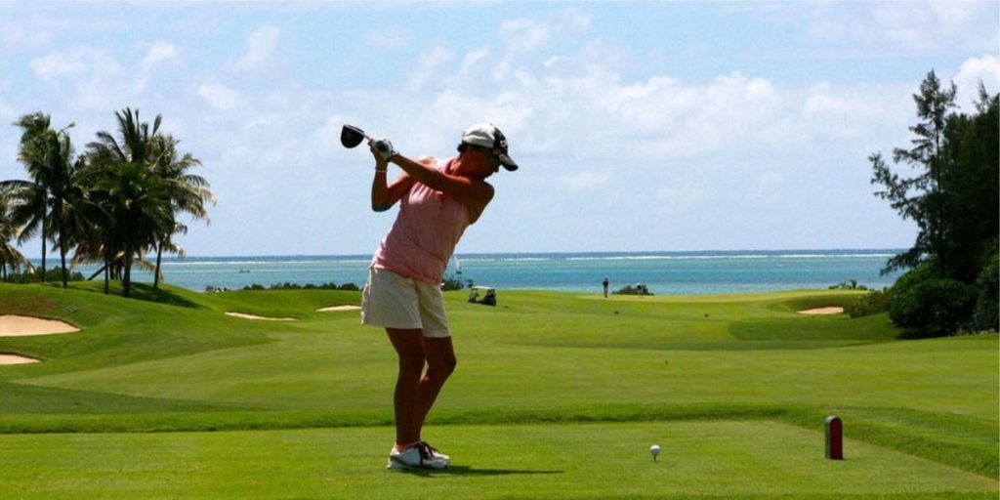
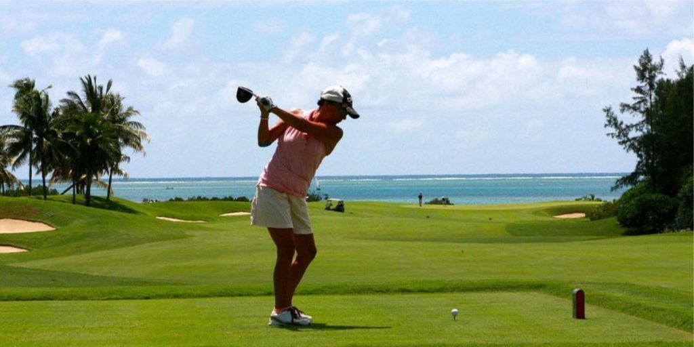

Rugby
O Rugby, apesar de ser um esporte que muitos brasileiros nem mesmo conhecem, o rugby é muito praticado em países como Austrália e Nova Zelândia, em especial o Rugby Union, que é a modalidade com 15 jogadores. Na Austrália ele é considerado o esporte mais popular do país, superando até mesmo o futebol.
Surf
O Surf é praticamente um dos esportes que simbolizam a Austrália, e não é para menos. O país é o maior vencedor do Mundial de Surf e do World Longboard Tour, além de ser o segundo maior campeão do World Junior Championship, atrás apenas do Brasil. E nenhum outro país tem tantos surfistas campeões mundiais. Um dos principais eventos do surf, aliás, ocorre na Austrália.
Futebol
O futebol australiano, muito parecido com o futebol americano, o que quer dizer que há muito contato e várias disputas mais ríspidas. Porém, ao contrário deste, no futebol australiano os jogadores não utilizam todo aquele aparato de proteção. Os australianos o chamam carinhosamente de ‘footy’ e ele é tão popular no país quanto o rugby. Provavelmente porque ambos os esportes guardam muitas semelhanças entre si.
O futebol vem se tornando mais atrativo no país desde que a seleção australiana mudou de federação, indo da Oceania para a Ásia. Desde então, os ‘socceroos’ carimbaram duas vagas na Copa do Mundo, sem ter que passar pela temida repescagem. Embora os torcedores guardem com carinho a lembrança da vitória sobre o Uruguai em 2005.
Golfe
Enquanto no Brasil o golfe é limitado a pessoas de classes mais altas, na Austrália é comum qualquer pessoa praticar o esporte. Principalmente porque há vários clubes de golfe espalhados pelo país e não existe a necessidade de ser um associado para poder jogar. Isso faz com que haja muitos praticantes ocasionais, que jogam apenas pela diversão.
Criquete
Outro esporte que muita gente só ouviu falar, mas que é muito praticado nos países que compõem a Commonwealth é o Criquete. Inclusive, possui uma Copa do Mundo que, apesar de não ter a mesma audiência, não deve nada à da FIFA. A Austrália já foi sede da Copa do Mundo de Críquete em 1992 e 2015, ambas em conjunto com a Nova Zelândia. E é também a maior campeã do torneio, com cinco títulos.


 
